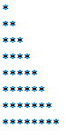
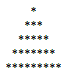
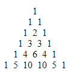

DSC 106: Assignment 1
PART A
Question 1: Write a function in part_a.js to print "WELCOME TO DSC 106" in the paragraph tag below
Question 2: Print the following pattern: **************** (15 asterisks) using for loop.
Solution:
Question 3: Print the following pattern: *#*#*#*#*#*#*#* (15 asterisks) using for loop and if-else statements in javascript.
Solution:
Question 4: Print the following pattern: **************** (15 asterisks) VERTICALLY using for loop.
Solution:
Question 5: Print the following pattern:
Solution:
Question 6: Print the following pattern:

Solution:
Question 7: Print the following pattern:

Solution:
Question 8: Print the following pattern:

Solution:
Question 9: Sort the given array and find out the median of the sorted array. Array: [-3,8,6,5,-4,3,2,1]
Solution:
Question 10: Array operations
Array A: [10, 20 , 30 , 40, 55, 25]
Array B: [15, 30 , 30 , 10, 15, 5]
- Normalize array A in the range of (0,1)
- Calculate mean of array A and B
- Calculate variance of array A and B
- Implement element-wise multiplication between A and B
Solution:
- Mean(A):
Mean(B):
- Variance(A):
Variance(B):